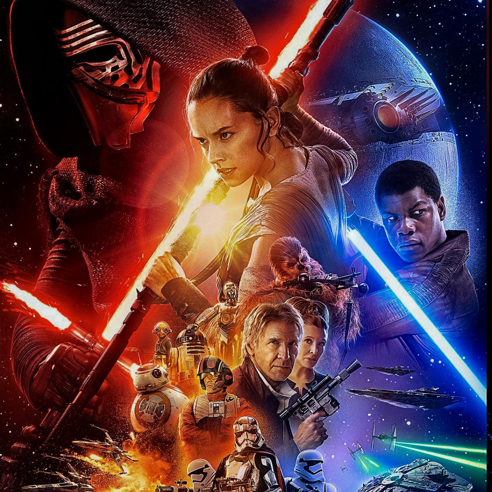

Image: by Flickr at https://upload.wikimedia.org/wikipedia/en/7/76/My-Cousin-Vinny-Poster.jpg, CC BY-SA 3.0
My Cousin Vinny
This is my dad's favorite movie and I have watched it countless times. It has some of my favorite actors including Marisa Tomei, Joe Pesci, and Ralph Macchio.
Image: by Flickr at https://www.flickr.com/photos/ralphhogaboom/4968090389, CC BY-SA 2.0
Mamma Mia
This is my favorite movie that is a film adaptation of a Broadway musical. It features songs by the Swedish pop group ABBA. I have seen this movie over 50 times.
Image: by Flickr at https://live.staticflickr.com/4138/4799335973_b7d03e177c.jpg, CC BY-NC-SA 2.0
The Lion King
This has been my favorite animated movie from childhood for my entire life. I especially love the soundtrack of this movie.

Image: by Flickr at http://voicesfilm.com/wp-content/uploads/2015/04/09-mp3-image-1377-x-2044-November-22-2017November-22-2017.jpg, CC BY-NC-ND 4.0
Star Wars
The Star Wars franchise was a huge part of my childhood. My love for sci-fi and fantasy originated from this series. Take a look at my all time favorite scene: Binary Sunset in Episode IV: A New Hope.